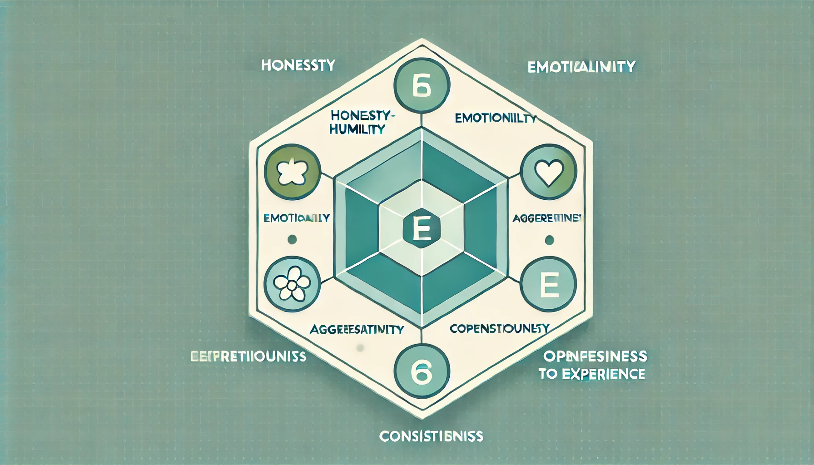
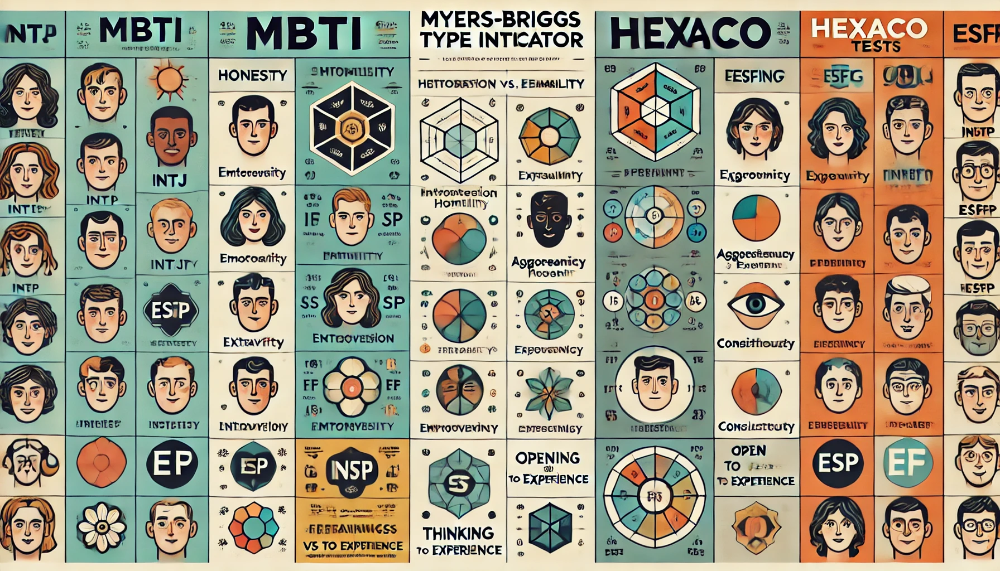

HEXACO 성격 모델

HEXACO 성격 모델 소개
HEXACO 성격 모델은 6개의 주요 성격 특성을 평가하는 모델로, 정직-겸손, 감정성, 외향성, 우호성, 성실성, 경험에 대한 개방성을 포함합니다. 이 모델은 심리학 연구에서 널리 사용되며, 개인의 성격을 다양한 측면에서 이해하는 데 도움을 줍니다.
정직-겸손 (Honesty-Humility)
정직-겸손 요소는 진실성을 평가하며, 높은 점수를 받은 사람들은 다른 사람들을 속이거나 조작하지 않으며, 자신을 과시하지 않습니다. 이 특성은 신뢰성과 도덕성을 반영하며, 높은 정직-겸손 점수를 가진 사람들은 공정하고 정직한 행동을 보이는 경향이 있습니다. 반면, 낮은 점수를 가진 사람들은 자기중심적이고, 다른 사람들을 이용하는 경향이 있을 수 있습니다. 이 특성은 직장 생활과 대인 관계에서 중요한 역할을 합니다.
감정성 (Emotionality)
감정성 요소는 정서적 반응성을 평가합니다. 높은 점수를 받은 사람들은 감정적으로 더 민감하고, 동정심이 많으며, 스트레스를 받기 쉽습니다. 이 특성은 개인의 정서적 안정성과 관련이 있으며, 높은 점수를 가진 사람들은 다른 사람들의 감정을 잘 이해하고 공감할 수 있습니다. 낮은 점수를 가진 사람들은 감정적으로 더 강인하고, 스트레스를 덜 받는 경향이 있습니다. 이 특성은 개인의 정신 건강과 대인 관계에 영향을 미칩니다.
외향성 (Extraversion)
외향성 요소는 사회적 상호작용과 활력을 평가합니다. 외향적인 사람들은 사교적이고, 자신감 있으며, 활력이 넘칩니다. 이 특성은 개인의 에너지 수준과 사회적 참여도를 반영하며, 높은 점수를 가진 사람들은 다양한 사회적 활동을 즐기고, 사람들과 쉽게 어울릴 수 있습니다. 반면, 낮은 점수를 가진 사람들은 내향적이고, 혼자 있는 시간을 더 선호합니다. 이 특성은 직장 생활과 사회적 관계에서 중요한 역할을 합니다.
우호성 (Agreeableness)
우호성 요소는 대인 관계에서의 친절함과 관용을 평가합니다. 높은 점수를 받은 사람들은 협력적이고, 친절하며, 갈등을 피하려 합니다. 이 특성은 개인의 대인 관계에서의 태도와 행동을 반영하며, 높은 점수를 가진 사람들은 다른 사람들과 잘 어울리고, 타인의 의견을 존중합니다. 반면, 낮은 점수를 가진 사람들은 경쟁적이고, 타인의 감정을 덜 고려할 수 있습니다. 이 특성은 팀워크와 대인 관계에서 중요한 역할을 합니다.
성실성 (Conscientiousness)
성실성 요소는 계획성과 목표 지향성을 평가합니다. 성실한 사람들은 신뢰할 수 있고, 조직적이며, 목표 달성에 열중합니다. 이 특성은 개인의 책임감과 성취 지향성을 반영하며, 높은 점수를 가진 사람들은 체계적으로 일을 처리하고, 목표를 달성하기 위해 열심히 노력합니다. 반면, 낮은 점수를 가진 사람들은 덜 체계적이고, 일을 마무리하는 데 어려움을 겪을 수 있습니다. 이 특성은 학업과 직장 생활에서 중요한 역할을 합니다.
경험에 대한 개방성 (Openness to Experience)

경험에 대한 개방성 요소는 새로운 경험과 아이디어에 대한 수용성을 평가합니다. 높은 점수를 받은 사람들은 창의적이고, 호기심이 많으며, 다양한 경험을 즐깁니다. 이 특성은 개인의 창의성과 지적 호기심을 반영하며, 높은 점수를 가진 사람들은 새로운 아이디어와 경험에 열려 있습니다. 반면, 낮은 점수를 가진 사람들은 보수적이고, 익숙한 것에 안주하려는 경향이 있습니다. 이 특성은 학습과 문제 해결 능력에 영향을 미칩니다.
성격 테스트를 하고 나와 비슷한 유명인을 만나보세요

MBTI와 HEXACO TEST의 차이
MBTI와 HEXACO는 성격을 평가하는 두 가지 주요 테스트입니다. MBTI는 사람의 성격을 16가지 유형으로 나누며, 주로 개인의 선호도와 인지 스타일을 평가합니다. 반면, HEXACO는 6가지 주요 성격 특성을 평가하여 개인의 성격을 더 세밀하게 분석합니다. MBTI는 주로 직업 적성과 대인 관계에서 사용되며, HEXACO는 심리학 연구와 개인의 성격 특성을 더 깊이 이해하는 데 사용됩니다. 두 테스트는 서로 다른 접근 방식을 통해 개인의 성격을 다각도로 평가합니다.
왜 성격 테스트를 통해 자신을 테스트해야 할까요?
성격 테스트는 개인이 자신의 성격 특성과 행동 양식을 이해하는 데 도움을 줍니다. 이를 통해 자신의 강점과 약점을 파악하고, 이를 기반으로 개인적 성장과 발전을 도모할 수 있습니다. 성격 테스트는 자기 이해를 높이고, 타인과의 관계를 개선하는 데 중요한 도구가 될 수 있습니다. 또한, 성격 테스트는 직업 선택과 커리어 개발에 있어 중요한 역할을 합니다. 자신의 성격 특성에 맞는 직업을 선택하면 직장 생활에서 더 큰 만족감과 성취감을 느낄 수 있습니다.
성격 테스트를 통해 자신의 성격을 이해하면, 자신의 행동 패턴과 동기 부여 요소를 더 잘 이해할 수 있습니다. 이는 개인의 목표 설정과 목표 달성에 있어 중요한 정보를 제공합니다. 예를 들어, 성실성이 높은 사람은 체계적이고 계획적인 목표 설정이 효과적일 수 있으며, 외향성이 높은 사람은 사회적 상호작용을 통해 동기 부여를 받을 수 있습니다.
또한, 성격 테스트는 타인과의 관계를 개선하는 데 도움을 줍니다. 타인의 성격 특성을 이해하면, 갈등을 피하고 협력적인 관계를 구축하는 데 도움이 됩니다. 예를 들어, 우호성이 높은 사람은 타인의 의견을 존중하고 협력하려는 경향이 있으며, 이는 팀워크와 협업에 긍정적인 영향을 미칩니다.
성격 테스트는 개인의 정신 건강에도 긍정적인 영향을 미칠 수 있습니다. 자신의 감정성과 정서적 반응성을 이해하면, 스트레스 관리와 정서적 안정에 도움이 됩니다. 이는 개인의 전반적인 삶의 질을 향상시키는 데 중요한 역할을 합니다.
성격 테스트는 자기 이해와 성장을 위한 중요한 도구입니다. 이를 통해 자신의 성격 특성을 이해하고, 개인적 성장과 발전을 도모하며, 타인과의 관계를 개선할 수 있습니다. 또한, 직업 선택과 커리어 개발에 있어 중요한 정보를 제공하여, 보다 만족스러운 삶을 살아가는 데 도움을 줍니다. 성격 테스트를 통해 자신의 성격을 이해하고, 이를 바탕으로 더 나은 삶을 살아가세요.